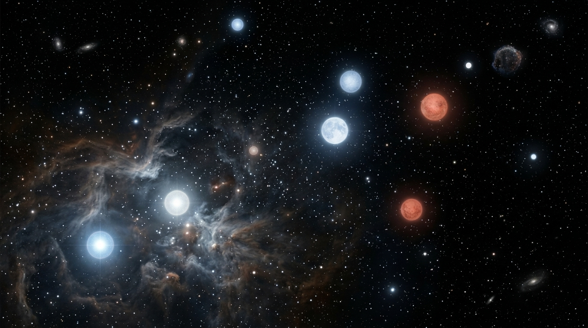
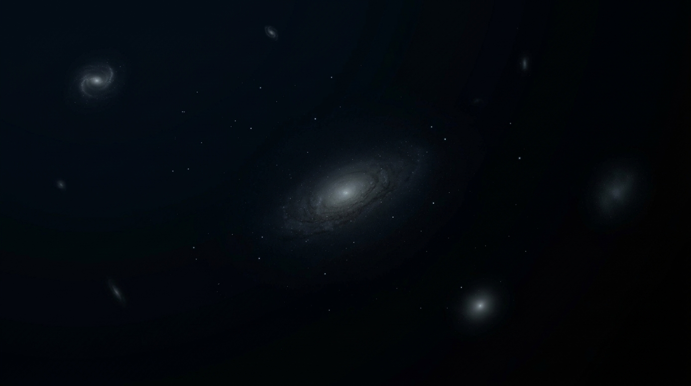
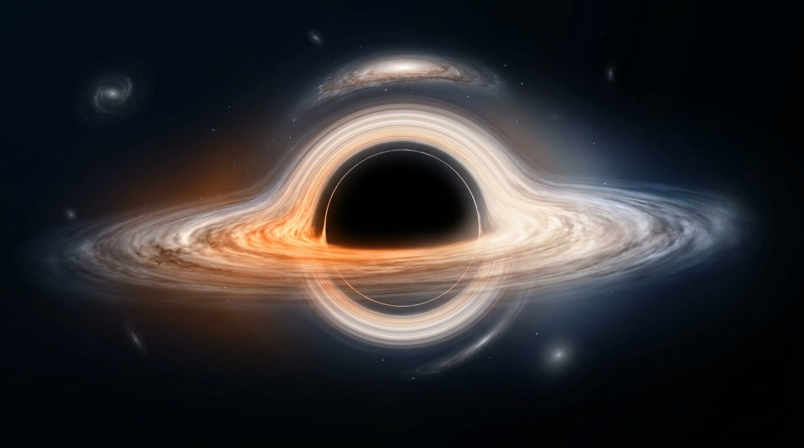
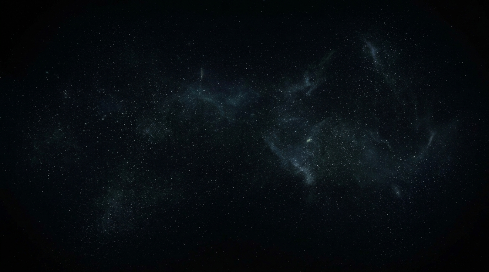

Unlike the assumed beginning, the universe may not end with a bang!
Heat death is one possible fate of the universe where it would essentially become incredibly dark, cold, and quiet caused by its perpetual expansion.
Quite a gloomy end to everything.
Want to learn more?
Some information related to this theory.

Stars won't shine forever. Over immense periods of time, stars will exhaust their fuel that powers their nuclear fusion. Smaller stars can eventually become white dwarfs, while massive stars can explode as supernovae and leave behind neutron stars or black holes.

As stars disappear and fewer new ones are created, galaxies will become progressively darker.

Even black holes may not survive forever. According to current theoretical models, black holes can slowly lose energy through Hawking radiation.

Eventually, the universe could approach maximum entropy: energy spread so evenly that there are no meaningful energy differences left to power complex processes.
The universe will not last forever. Neither will we. So make your brief moment your own.
HOW MUCH TIME DOES THE UNIVERSE HAVE LEFT (According to this theory) ?
Information-gap theory of curiosity is absolutely not being used here.